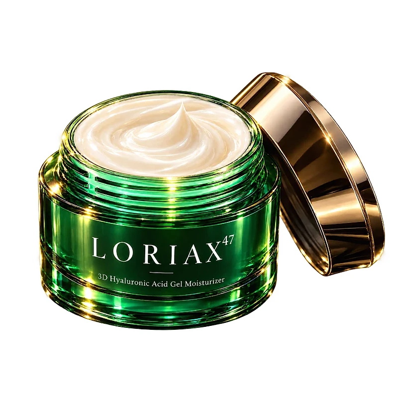
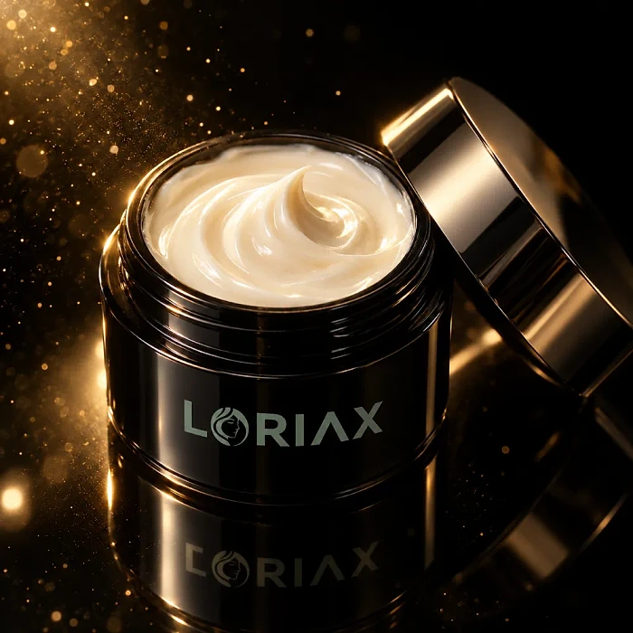

Was ist Loriax 47 und wie wirkt es?
Loriax 47 ist eine Anti-Aging-Gesichtscreme in einem 50-ml-Tiegel. Auf dem Tiegel steht „3D Hyaluronic Acid Gel Moisturizer“, also eine Feuchtigkeitspflege in Gelform mit Hyaluronsäure. Laut der offiziellen Website reicht ein Tiegel für etwa einen Monat. Hergestellt wird die Creme nach Angaben des Herstellers in der EU, frisch für jede Bestellung. Hinter der Marke steht laut Impressum die Spring Life Ltd. aus London.
Das Besondere am Konzept der Marke ist eine Hautanalyse auf der Website. Nach Angaben des Herstellers analysiert eine KI ein hochgeladenes Foto in drei Zonen, nämlich Stirn, Augenpartie sowie Kinn und Kieferlinie, und ordnet danach eine von 50 Formeln zu. Die Formel mit der Nummer 47 richtet sich laut Website an ein Hautalterungsmuster mit Krähenfüßen und Trockenheitslinien, beginnenden Mimikfalten auf der Stirn und nachlassender Kontur an der Kieferlinie.
Als zentrale Wirkstoffe nennt die Website einen Multi-Hyaluronsäure-Komplex, einen Peptid-Komplex und Bakuchiol, eine pflanzliche Alternative zu Retinol. Dazu kommen Niacinamid, Vitamin C (Ascorbylpalmitat), Vitamin E, Panthenol, Allantoin und Glycerin. Laut Hersteller ist die Creme dermatologisch getestet, hypoallergen und frei von Parabenen, Sulfaten und Phthalaten.
Die Website verspricht glattere, besser durchfeuchtete Haut nach sieben Tagen, sichtbar feinere Linien nach vier Wochen und eine straffere Haut nach zwölf Wochen. Laut den häufig gestellten Fragen zeigen sich erste Veränderungen meist nach zwei bis vier Wochen.
Wie bei jedem Pflegeprodukt gilt: Ergebnisse können variieren, und eine Creme kann die natürliche Hautalterung nicht aufhalten, sondern nur das Erscheinungsbild der Haut pflegen. Die Website nennt Dr. Anna Weber als Dermatologin von Loriax Skin Science und Anna Webber als Gründerin. Ob die KI-Analyse tatsächlich unterschiedliche Formeln zuweist, lässt sich von außen nicht überprüfen; auf der Bestellseite, zu der dieser Artikel führt, wird die Formel 47 angeboten.
Loriax 47 Inhaltsstoffe
Laut der offiziellen Website ist Loriax 47 mit den folgenden Wirkstoffen auf die einzelnen Gesichtszonen abgestimmt:
Multi-Hyaluronsäure-Komplex: soll das Hautgewebe aufpolstern und feine Linien rund um die Augen glätten.
Peptid-Komplex mit Panthenol und Allantoin: laut Hersteller für beginnende Mimikfalten; Panthenol und Allantoin sind bekannte pflegende Stoffe.
Niacinamid, Vitamin C (Ascorbylpalmitat) und Glycerin: für die Stirnpartie und einen frischeren, ebenmäßigeren Teint.
Bakuchiol mit Peptiden: eine pflanzliche Retinol-Alternative, die laut Website die Elastizität an der Kieferlinie verbessern soll.
Vitamin E (Tocopherylacetat) und Antioxidantien-Komplex: zum Schutz vor freien Radikalen.
Insgesamt spricht die Website von über 100 Wirkstoffen, aus denen die 50 Formeln zusammengestellt werden. Die Website ordnet jedem Wirkstoff einen erkannten Bedarf, eine Wirkung und einen Nutzen zu, nennt aber keine Konzentrationen. Eine vollständige Liste der Inhaltsstoffe (INCI) mit allen Bestandteilen veröffentlicht die Website ebenfalls nicht; prüfen Sie diese deshalb auf der Verpackung, besonders wenn Sie auf bestimmte Stoffe empfindlich reagieren. Laut den häufig gestellten Fragen ist jede Formel dermatologisch getestet, hypoallergen und frei von Parabenen, Sulfaten, Phthalaten und aggressiven Chemikalien, und sie soll auch für empfindliche Haut geeignet sein.
Loriax 47 Dosierung
Laut der offiziellen Website wird Loriax 47 zweimal täglich verwendet: morgens eine Portion und abends zwei Portionen. Die Website beschreibt die Anwendung als Ritual in drei Schritten.
Erstens: Beginnen Sie mit sauberer, trockener Haut. Zweitens: Erwärmen Sie eine perlengroße Menge zwischen den Fingerspitzen. Drittens: Arbeiten Sie die Creme mit Aufwärtsbewegungen in die Haut ein, morgens und abends. Besonders die Augenpartie, die Stirn und die Kieferlinie sind laut Website die Zielbereiche dieser Formel.
Ein Tiegel mit 50 ml ist laut Hersteller für etwa einen Monat gedacht. Für sichtbare Veränderungen empfiehlt die Website eine regelmäßige Anwendung über mehrere Wochen; deutliche Ergebnisse werden typischerweise nach acht bis zwölf Wochen beschrieben. Ergebnisse können variieren.
Allgemeine Hinweise: Vermeiden Sie den direkten Kontakt mit den Augen. Wer sehr empfindliche Haut hat, kann die Creme zunächst an einer kleinen Stelle testen, zum Beispiel am Hals. Da die Formel Vitamin C und Bakuchiol enthält, ist tagsüber ein zusätzlicher Sonnenschutz sinnvoll, wie bei jeder Anti-Aging-Pflege.
Bei Rötungen, Brennen oder Juckreiz beenden Sie die Anwendung und lassen Sie Ihre Haut bei Bedarf von einer Fachperson ansehen. Eine Kundin beschreibt die Creme auf der Website kurz mit den Worten „Nie fettig“.
Loriax 47 – Rückerstattung
Loriax bietet laut der offiziellen Website eine freiwillige 180-Tage-Zufriedenheitsgarantie. Die Website formuliert es so: Wenn Sie keinen Unterschied auf Ihrer Haut sehen, wird der Kaufpreis erstattet. Diese Garantie gilt zusätzlich zum gesetzlichen Widerrufsrecht von 14 Tagen ab Erhalt der Ware.
Der Ablauf ist auf der Seite zur Rückgabe beschrieben. Kontaktieren Sie zuerst das Support-Team per E-Mail. Falls eine Rücksendung erforderlich ist, erhalten Sie die Rücksendeinformationen direkt vom Kundenservice. Die Website bittet ausdrücklich darum, nichts an die Geschäftsadresse zu schicken, und weist darauf hin, dass im Einzelfall nicht jede Rücksendung notwendig ist.
Kommt Ihre Bestellung beschädigt an, schickt der Hersteller laut Website Ersatz. Dafür bittet er um Fotos der Versandverpackung und der beschädigten Produkte. Ist die äußere Verpackung schon bei der Lieferung sichtbar beschädigt, sollten Sie die Annahme verweigern.
Eine Stornierung ist vor dem Versand möglich, denn laut Website wird das Zahlungsmittel erst belastet, wenn die Bestellung das Lager verlässt. Ein Abonnement wird auf der Website nicht beschrieben.
Bewahren Sie Ihre Bestellbestätigung auf, damit Sie die Frist im Blick behalten. Bei Fragen zu Ihrer Bestellung, Rücksendung oder Ihrem Einkauf ist das Support-Team per E-Mail erreichbar. Für den Widerruf stellt die Website ein Muster-Widerrufsformular bereit, das an die Spring Life Ltd. in London gerichtet wird.
Loriax 47 – Wo kaufen?
Loriax 47 wird über die offizielle Website loriax-de.com verkauft. Dort finden Sie die Hautanalyse, die Angebote mit einem, drei oder fünf Tiegeln, die Erklärung der Wirkstoffe sowie die rechtlichen Informationen und den Kundenservice.
Apotheken, Drogerien oder Parfümerien werden auf der Website nicht als Verkaufsstellen genannt. Angebote auf Marktplätzen stammen daher nicht unbedingt vom Hersteller, und dort gilt die 180-Tage-Garantie in der Regel nicht.
Laut Website wird die Creme in der EU hergestellt und frisch produziert. Der Versand ist laut Hersteller in der gesamten EU kostenlos, und das Zahlungsmittel wird erst belastet, wenn die Bestellung das Lager verlässt.
Achten Sie beim Besuch darauf, dass die Adresse loriax-de.com lautet, und prüfen Sie im Bestellvorgang, welches Angebot und welche Formel Sie auswählen. Die größeren Pakete enthalten laut Website zusätzliche Tiegel, sodass Sie die Pflege über mehrere Monate ohne Unterbrechung fortsetzen können. Bei Fragen hilft das Support-Team per E-Mail weiter. Laut Website sind Ihre Daten bei der Bestellung verschlüsselt und werden nicht weitergegeben.
Um sicherzugehen, dass Sie das Originalprodukt erhalten, besuchen die meisten Nutzer die offizielle Website.
Ist Loriax 47 Betrug?
Nach den verfügbaren Informationen gibt es keinen Hinweis darauf, dass Loriax 47 Betrug ist. Die Creme wird über eine eigene Website verkauft, die ein Impressum, Allgemeine Geschäftsbedingungen, eine Widerrufsbelehrung und eine Rückgaberichtlinie veröffentlicht.
Laut Impressum ist die Spring Life Ltd. mit Sitz in London der Anbieter, mit Registernummer und Umsatzsteuer-Identifikationsnummer. Der Kundenservice ist per E-Mail erreichbar.
Positiv sind die lange Garantie von 180 Tagen, der kostenlose Versand in der EU und die Tatsache, dass kein Abonnement beschrieben wird.
Es gibt aber Punkte, die Aufmerksamkeit verdienen. Die Wirkstoffe werden nur ausgewählt genannt, eine vollständige Zutatenliste fehlt. Prozentangaben wie „91 % bestätigen weniger feine Linien“ sind Herstellerangaben ohne veröffentlichte Studie. Die Kundenbewertungen auf der Website bestehen vor allem aus kurzen Überschriften und Videos. Und wie genau die KI-Analyse funktioniert, lässt sich von außen nicht nachvollziehen.
Vorsicht ist außerdem bei Angeboten außerhalb der offiziellen Website geboten, denn dort gilt die Garantie des Herstellers in der Regel nicht.
Wie bei jedem Pflegeprodukt sollten Sie realistische Erwartungen haben: Ergebnisse können variieren. Wer direkt auf der offiziellen Website bestellt und die Bedingungen kennt, geht nach heutigem Stand kein besonderes Risiko ein, denn die 180-Tage-Garantie gibt Ihnen viel Zeit, die Creme in Ruhe zu testen.
Wer Produktdetails überprüfen oder die aktuelle Verfügbarkeit prüfen möchte, ist auf der offiziellen Loriax 47-Website am sichersten aufgehoben.
